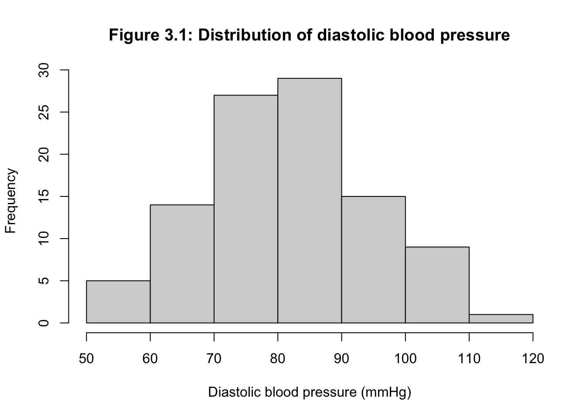

Module 3: Solutions to Learning Activities
Activity 3.1
An investigator wishes to study people living with agoraphobia (fear of open spaces). The investigator places an advertisement in a newspaper asking for volunteer participants. A total of 100 replies are received of which the investigator randomly selects 30. However, only 15 volunteers turn up for their interview.
- Which of the following statements is true?
- The final 15 participants are likely to be a representative sample of the population available to the investigator
- The final 15 participants are likely to be a representative sample of the population of people with agoraphobia
- The randomly selected 30 participants are likely to be a representative sample of people with agoraphobia who replied to the newspaper advertisement
- None of the above
ANSWER: C
- The basic problem confronted by the investigator is that:
- The accessible population might be different from the target population
- The sample has been chosen using an unethical method
- The sample size was too small
- It is difficult to obtain a sample of people with agoraphobia in a scientific way
ANSWER: A
Activity 3.2
A dental epidemiologist wishes to estimate the mean weekly consumption of sweets among children of a given age in her area. After devising a method which enables her to determine the weekly consumption of sweets by a child, she conducted a pilot survey and found that the standard deviation of sweet consumption by the children per week is 85 gm (assuming this is the σ). She considers taking a random sample for the main survey of:
- 25 children, or
- 100 children, or
- 625 children or
- 3,000 children.
- Estimate the standard error and maximum likely (95% confidence) error of the sample mean for each of these four sample sizes.
# i: n=25
n <- 25
se <- 85 / sqrt(n)
se## [1] 17mle <- 1.96 * se
mle## [1] 33.32
- The standard error of the mean for a sample of 25 = 85/√25 = 17 gm, and the maximum likely error = 1.96 × 17 = 33.32 gm.
# ii: n=100
n <- 100
se <- 85 / sqrt(n)
se## [1] 8.5mle <- 1.96 * se
mle## [1] 16.66
- The standard error of the mean for a sample of 100 = 85/√100 = 8.5 gm, and the maximum likely error =1.96 × 8.5 = 16.66 gm.
# iii: n=625
n <- 625
se <- 85 / sqrt(n)
se## [1] 3.4mle <- 1.96 * se
mle## [1] 6.664
- The standard error of the mean for a sample of 625 = 85/√625 = 3.4 gm, and the maximum likely error =1.96 × 3.4 = 6.66 gm.
# iv: n=3000
n <- 3000
se <- 85 / sqrt(n)
se## [1] 1.551881mle <- 1.96 * se
mle## [1] 3.041686
- The standard error of the mean for a sample of 3,000 = 85/√3000 = 1.55 gm, and the maximum likely error =1.96 × 1.551881 = 3.04 gm.
- What happens to the standard error as the sample size increases? What can you say about the precision of the sample mean as the sample size increases?
When the sample size increases, the standard error of the mean (and hence the maximum likely error) decreases. Thus, sample means from larger samples are more precise than from smaller samples.
Activity 3.3
The dataset for this activity is the same as the one used in Activity 1.4 in Module 1. The file is Activity1.4.rds on Moodle.
- Plot a histogram of diastolic BP and describe the distribution.
library(jmv)
dbp <- readRDS("data/activities/Activity_S1.4.rds")
hist(dbp$diabp,
main="Figure 3.1: Distribution of diastolic blood pressure",
xlab="Diastolic blood pressure (mmHg)")
The distribution is approximately symmetrical, centered about the mean.
- Use R to obtain an estimate of the mean, standard error of the mean and the 95% confidence interval for the mean diastolic blood pressure.
descriptives(data=dbp, vars=diabp, se=TRUE)##
## DESCRIPTIVES
##
## Descriptives
## ──────────────────────────────────
## diabp
## ──────────────────────────────────
## N 100
## Missing 0
## Mean 82.23000
## Std. error mean 1.301522
## Median 83.00000
## Standard deviation 13.01522
## Minimum 56.00000
## Maximum 118.0000
## ──────────────────────────────────t.test(dbp$diabp)##
## One Sample t-test
##
## data: dbp$diabp
## t = 63.18, df = 99, p-value < 2.2e-16
## alternative hypothesis: true mean is not equal to 0
## 95 percent confidence interval:
## 79.6475 84.8125
## sample estimates:
## mean of x
## 82.23The sample mean is estimated as 82.2 mmHg, and the standard error (SE) of the mean is 1.30 mmHg. The 95% confidence interval is from 79.6 to 84.8 mmHg.
Note that the original data have one decimal place. While we could present the mean to two decimal places when reporting the mean, it seems a bit excessive to present a mean blood pressure to two decimal places. Thus we report the mean and 95% confidence interval for the mean with 1 decimal place.
- What can you say about the population mean from these results? (Include in you answer what is meant by the confidence interval of a mean).
We are 95% confident that true mean of the population from which we sampled lies between 79.6 mmHg and 84.8 mmHg.
Activity 3.4
Suppose that a random sample of 81 newborn babies delivered in a hospital located in a poor neighbourhood during the last year had a mean birth weight of 2.7 kg and a standard deviation of 0.9 kg. Calculate the 95% confidence interval for the unknown population mean. Interpret the 95% confidence interval.
This question asks for a confidence interval to be calculated from summarised data. R does not have an in-built function to do this, but we can use the code presented in the R notes to complete this activitiy.
ci_mean <- function(n, mean, sd, width=0.95, digits=3){
lcl <- mean - qt(p=(1 - (1-width)/2), df=n-1) * sd/sqrt(n)
ucl <- mean + qt(p=(1 - (1-width)/2), df=n-1) * sd/sqrt(n)
print(paste0(width*100, "%", " CI: ",
format(round(lcl, digits=digits), nsmall = digits),
" to ", format(round(ucl, digits=digits), nsmall = digits) ))
}
ci_mean(n=81, mean=2.7, sd=0.9, width=0.95)## [1] "95% CI: 2.501 to 2.899"We are 95% confident that the true mean birthweight in the hospital located in a poor neighbourhood lies between 2.5 kg and 2.9 kg.